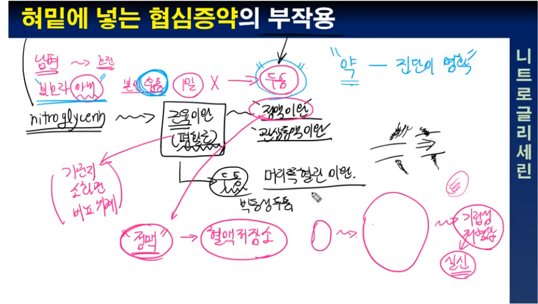

기역과 함께하는 깊이있는 의학공부
협심증치료는 NTG인가 youtube
협심증의 치료 - 증상치료와 근본적치료 youtube
협심증의 증세 - 12가지 표현 youtube
협심증은 기본적으로 수요와 공급의 문제 youtube
협심증, 심근경색, 관상동맥질환, 허혈성심장병... 이게 다 뭔가요 youtube
협심증, 급성 흉통시 혀밑에 넣는 약(니트로글리세린)에 관하여 youtube
혈관내의 플라크가 심장을 무너뜨린다 - 에드워드 제너의 편지 youtube

혀밑에 넣는 협심증약의 작용원리 youtube

혀밑에 넣는 협심증약(니트로글리세린)의 부작용 youtube

풍선으로 사람을 살린다 - IABP의 원리 youtube

칼슘점수가 높으면 위험한가 youtube

정맥혈전증, 왜 문제인가 youtube
이집트공주도 동맥경화 youtube

의사가 하는 심폐소생술은 많이 더 대단한가 youtube

위험인자가 없이 심혈관질환이 생기는 것은 매우 드문 일 youtube
우측심장 심근경색에 관하여 youtube
와파린은 왜 드시나요 youtube
얼마나 막혀야 문제를 일으키나 youtube
아랫사람에게 화내는 상급자에 대하여 youtube
심혈관질환의 대표증상 2가지 youtube

심장이 빨리 뛴다, 동성 빈맥에 관하여 youtube

심장이 너무 두껍습니다 youtube
심부전의 50프로를 차지하는 HFpEF에 관하여 youtube

심뇌혈관질환의 위험인자에 대하여 youtube
심근효소수치란 무엇인가 youtube
심근경색의 두가지 종류 - STEMI와 NSTEMI youtube
심근경색으로 갑자기 죽음에 이르는 이유는 youtube
맥을 잡고 병을 진단한다 youtube
동맥경화, 어느 혈관에 잘생길까 youtube

대동맥류, 얼마나 위험한가 youtube

급작스런 죽음의 순간은 어떤 느낌일까 youtube
급성심근경색의 합병증 youtube
급성심근경색에서 해야 할 것과 하지 말아야 할 것 youtube
급성심근경색, 스텐트넣으면 끝? youtube
관상동맥칼슘점수, 모든 사람이 알아야 할까 youtube

관상동맥에 생기는 아주 다양한 문제 youtube
관상동맥 칼슘점수란 무엇인가 youtube

고혈압을 치료해야 하는 궁극적인 이유 - 동맥경화 이야기 youtube
가슴이 하나도 아프지 않은데 심근경색이라고? youtube
가슴이 아파요, 흉통의 접근 youtube
가슴이 아파서 관상동맥검사 받으러 왔어요 youtube
가슴두근거림, PSVT일까 youtube
A의 심장은 왜 두꺼워졌을까 youtube
맨위로